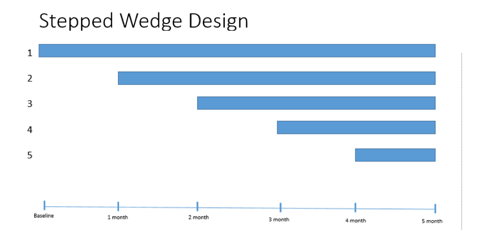
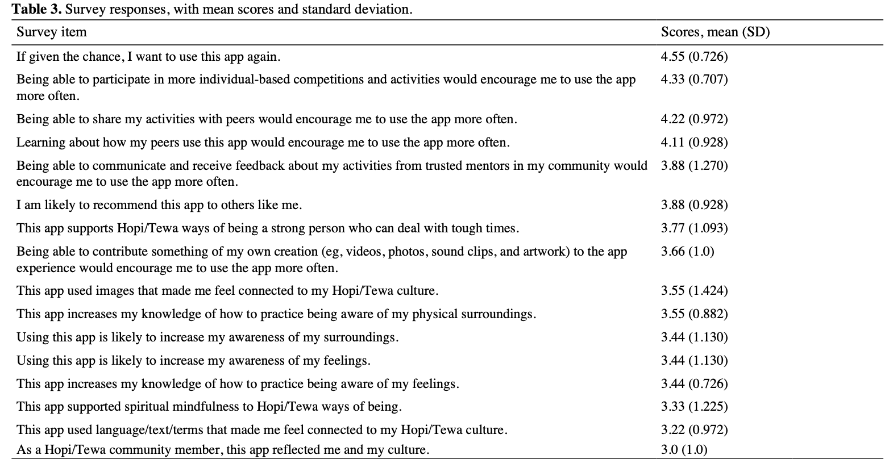
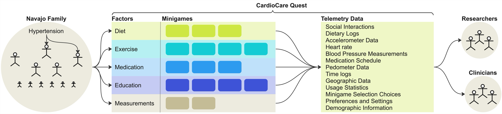

Comprehensive Exam
Playful Health Technology for Hypertension Management at the Intersection of Indigeneity and Disability
Pavan Prasad Gorintla
Committee: Dr. Jared Duval (chair) · Dr. Ashish Amresh · Dr. Igor Steinmacher · Dr. Laia Turmo Vidal
Checking self-reported hypertension against measured blood pressure, Northern Plains. [1]
From the paper

Redrawn from the paper
Find out how many adults with high blood pressure know they have it, by comparing what they report with what is measured.
418 adults of one tribe on a South Dakota reservation, 1986.
Focus: people were asked if a health worker had ever said their blood pressure was high, then their blood pressure was measured. The answers were scored like a screening test.
50% of adults with high measured blood pressure knew they had hypertension. Among adults aged 18 to 39, only 27% knew.
Which heart risk factor carries the most heart disease among American Indian and Alaska Native adults. [1]
From the paper

Redrawn from the paper
Find out which of seven heart health factors is linked to the most heart disease and stroke in American Indian and Alaska Native adults.
8,497 American Indian and Alaska Native adults in all 50 states, from a 2017 national telephone survey.
Focus: a population attributable fraction is the share of cases linked to one factor. It shows which factor matters most for the whole population.
42% of heart disease and stroke was linked to hypertension, the largest share. Next came high cholesterol (27%) and diabetes (18%).
Hypertension in Native communities · Care at home
Two trials bring hypertension care into the home.

Adults with heart failure, Gallup Indian Medical Center and Tohatchi Health Clinic, Navajo Nation (the Hózhó trial).
Five groups cross over every 30 days, so every patient receives the model. A study team starts and adjusts medicines by phone, using readings from a home blood pressure cuff given to every patient. [1]

370 urban American Indian and Alaska Native adults planned, at three urban Indian clinics in Washington and Oklahoma (protocol).
Community dietitians tailored the DASH diet with traditional foods such as corn, salmon, beans and squash. Both groups receive the same $30 weekly groceries, so the trial tests the counseling itself. [2]
Health and service needs of American Indians with disabilities. [1]
From the paper

Learn what disabled American Indians need, and what stands in their way, so tribes could plan their own rehabilitation services.
170 adult clients of three tribal vocational rehabilitation programs: Navajo Nation, Chippewa-Cree, and Shoshone-Bannock, 1987.
Focus: tribal program leaders helped design the questions, and trained rehabilitation staff ran private interviews.
High blood pressure was the second most common health problem (31.8% of all clients) and the most common among Navajo clients (42.2%).
Disability, rural living, and Native community presence across U.S. counties. [1]
From the paper

Redrawn from the paper
See how rural living and the share of Native people in a county relate to Native disability rates.
All 3,220 U.S. counties, American Community Survey 2015 to 2019; 211 counties have 5% or more Native residents.
Focus: each data point is a county, not a person, so it shows patterns across communities.
Where more Native people lived, Native disability was lower: 16.4% at every level of rurality, compared with 21.0% to 24.4% in other counties.
Designing with Native communities · Cultural grounding
A cultural practice as the main activity: two hula trials.
55 Native Hawaiian and Pacific Islander adults with systolic pressure of 140 or higher, Honolulu.
Systolic pressure fell 18.3 mmHg after 12 weeks of hula with self-care education, and 7.6 mmHg in the wait-list group. [1]

263 Native Hawaiian adults with uncontrolled hypertension, six community organizations.
At 6 months, 42.7% in the hula group were below 130/80, and 21.2% in the education-only group. Gains held at 12 months. [2]
Building culture into a mental health app with Native youth: ARORA. [1]
From the paper

Learn how to build Native culture into a mindfulness app, and what keeps youth using it.
A community advisory board of 6 Native professionals (4 Navajo, 2 Hopi) and 10 Native youth aged 12 to 18, Flagstaff, Arizona.
Focus: the advisory board set the cultural values first; then youth tried the app and drew their own screen ideas.
The board asked for spoken instructions, little text, and cooperative games. Youth asked the app to explain the cultural meaning of each feature.
Designing with Native communities · Community decides
Two Hopi studies: a tribal program sets the requirements, youth test the app.

15 Hopi Behavioral Health Services staff, Second Mesa, Arizona, 2023.
Many clients prefer documents read to them. Information mediators, such as parents and grandparents searching for a relative, will be major users. [1]

9 Hopi/Tewa youth aged 16 to 24, over Zoom, 2021.
Youth wanted to use the app again (4.55 of 5) and asked for Hopi-specific images, such as the mesas, and a first-run tutorial. [2]
Where this review leads: CardioCare Quest.

Diet
DASH Diet · Salt Sludge
Exercise
Dog Walking
Medication
Pill Path
Education
Vascular Village · Bingo Bash
Measurement
Daily Check-In
Backup
How will people with disabilities take part in design?
Spoken and simple
Audio instructions and text at a fifth-grade level [1]; surveys read aloud [2].
Helpers included
Information mediators, such as parents and grandparents, help a person use a tool [3].
Built in from the start
Captions added for hearing loss helped every player [4].
Time to review
Drafts mailed home before meetings [5]; learn first from media made by disabled creators [6].
From the paper